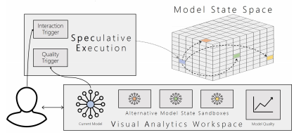

Speculative Execution for Guided Visual Analytics

VIS (2019) Workshop Paper
Authors
Fabian Sperrle, Jürgen Bernard, Michael Sedlmair, Daniel Keim, Mennatallah El-Assady
Materials
Abstract
We propose the concept of Speculative Execution for Visual Analytics and discuss its effectiveness for model exploration and optimization. Speculative Execution enables the automatic generation of alternative, competing model configurations that do not alter the current model state unless explicitly confirmed by the user. These alternatives are computed based on either user interactions or model quality measures and can be explored using delta-visualizations. By automatically proposing modeling alternatives, systems employing Speculative Execution can shorten the gap between users and models, reduce the confirmation bias and speed up optimization processes. In this paper, we have assembled five application scenarios showcasing the potential of Speculative Execution, as well as a potential for further research.